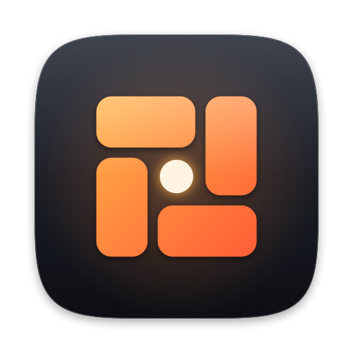

Stop fixing Spotlight.
Spotlight searches. roto does the rest. Windows, apps, clipboard, and emoji in one native, local-only menu bar agent for macOS.
Why replace, not fix
Spotlight isn't the problem.
The pile of fixes is.
What people miss on a Mac is rarely search. It's snapping a window, getting back last hour's copy, typing an emoji, jumping to the terminal. So they install a bigger launcher that rebuilds search to add those, or a stack of single-purpose apps. roto keeps Spotlight and replaces the stack.
The usual stack
- A launcher replacing Spotlightsecond ⌘Space
- A window tilerown permissions
- A clipboard managerown updater
- An emoji pickerown settings
- An app hotkey toolown shortcuts
- A window switcherown process
roto
One small agent next to Spotlight, not instead of it.
- One app, one process, one menu bar icon
- One required permission: Accessibility
- One plain-text config file
- Zero accounts, zero network code
The tools
Each one is a key away.
No palette in between.
Every tool has its own hotkey and opens directly. Change any key in ~/.config/roto/config.toml; roto reloads it as you save.
Window layout
Halves, thirds, quarters, maximize, a large centered size that leaves the desktop in view, and moving between displays.
⌃⌥← ⌃⌥→ ⌃⌥↩ ⌃⌥⇧CApp hotkeys
One chord opens an app, brings it forward, or cycles its windows.
⌃⌥T ⌃⌥BWindow switcher
Every open window, searchable by title or app, with an inspector. Close, minimize, hide, or quit without leaving the keyboard.
⌃⌥WClipboard history
Text, images, and files with a preview pane. Pastes straight into the field you were in.
⌃⌥VEmoji picker
Forgiving search across the full emoji set that types the result where your cursor is.
⌃⌥.Cheatsheet
Every shortcut from your current config, searchable, also in the menu bar.
⌃⌥/Native, fast, small
Swift and AppKit.
Nothing to warm up.
No Electron, no web views, no JavaScript runtime, no helper processes. Popups are built once and reused, search text is prepared when it arrives, and copied images wait on disk instead of in memory.
Measured on an M1 Pro running macOS 27, release build. Search figures are medians.
Feels like the Mac
Liquid Glass popups on macOS 26 and later, a scale-in like Spotlight's, and paste that lands in the app you were in without stealing its focus.
Accessible
VoiceOver labels and announcements, Reduce Motion, Increase Contrast, and a keyboard path for everything.
Local only
The app has no network code: no analytics, no accounts, no update checks. Clipboard history stays in files only you can read.
Config is text
One TOML file to read, diff, and keep in your dotfiles. A typo never breaks the app; the last good config stays active.
Honest limits
What roto won't do.
- Search files, apps, or the web. Spotlight does that well.
- Plugins, extension stores, AI features, or sync.
- Signed downloads or auto-update. You build it from source.
- Run on macOS older than 14.
Install
One clone, one make.
Needs macOS 14 or later and the Swift command line tools (xcode-select --install; Xcode itself is not required). On first launch, allow roto under Privacy & Security → Accessibility.
# build, bundle, and copy to /Applications
git clone https://github.com/ahmedragab20/roto.git
cd roto
make install
open /Applications/roto.appThen press ⌃⌥/ to see every shortcut. Read the guide and the config reference.